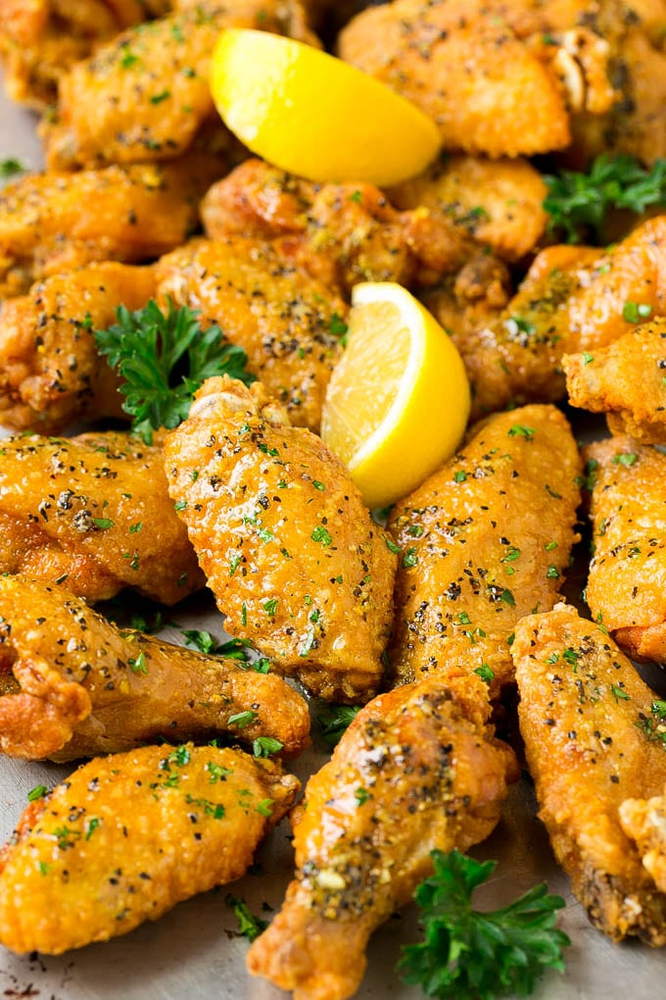

Lemon Pepper Wings

Description
An air fryer recipe that replicates Wingstop's lemon pepper wings!
All this requires is an air fryer, some dry seasonings, butter, and wings! You'll be having Wingstop in the comfort of your own home in half an hour!
Ingredients
Flour Mix
- 1/2 c of Flour
- 1 tsp Salt
- 1 tsp Pepper
Dry Rub
- 1 tsp Garlic Powder
- 1 tsp Onion Powder
- 1/2 tsp Paprika
- 1/2 tsp Salt
Butter Sauce
- Half a Stick of Butter
- 2 tbsp Lemon Pepper Seasoning
- 1 tsp Parsley
Steps
- Mix the flour mixture in a large bowl.
- Mix the dry seasonings and coat the wings well.
- Coat each chicken wing in the flour mix. It should be a light dusting but make sure the entire wing is evenly covered.
- Place the chicken into the air fryer in one layer. Avoid over-crowding and layering chicken on top of each other.
- Cook the chicken at 380 degrees F for 25 minutes. Flip the chicken halfway through the cooking time. Place in a mixing bowl when done.
- Melt the butter and add lemon pepper seasoning and parsley in a separate container. Coat and toss the chicken with the butter sauce.
- Serve immediately and enjoy!